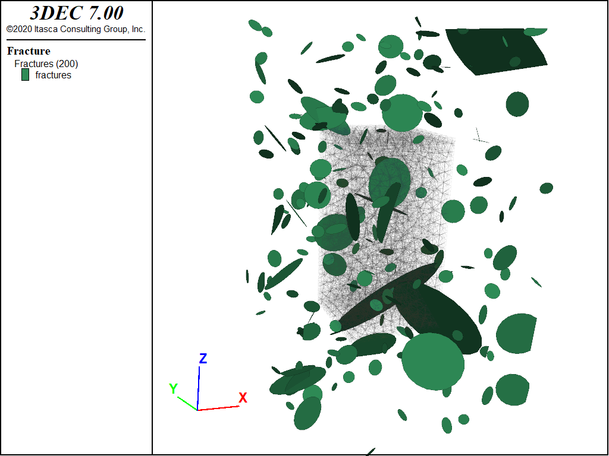
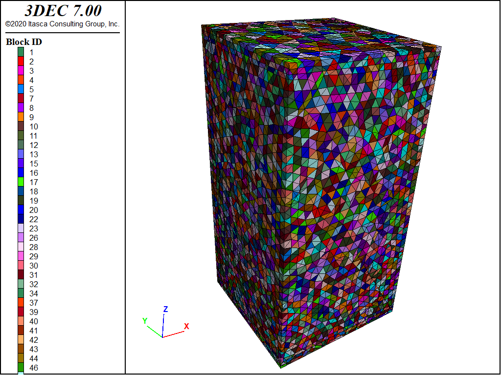
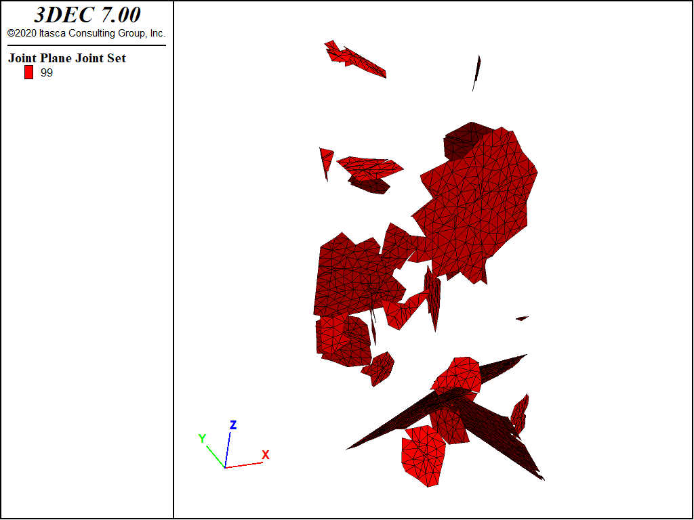
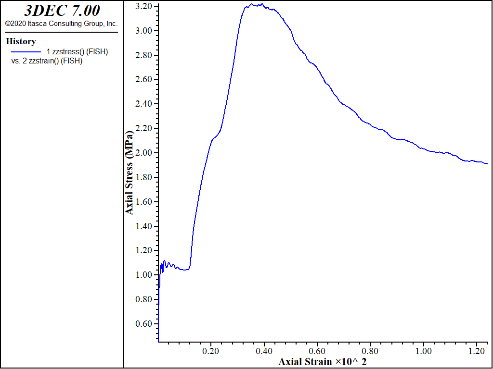
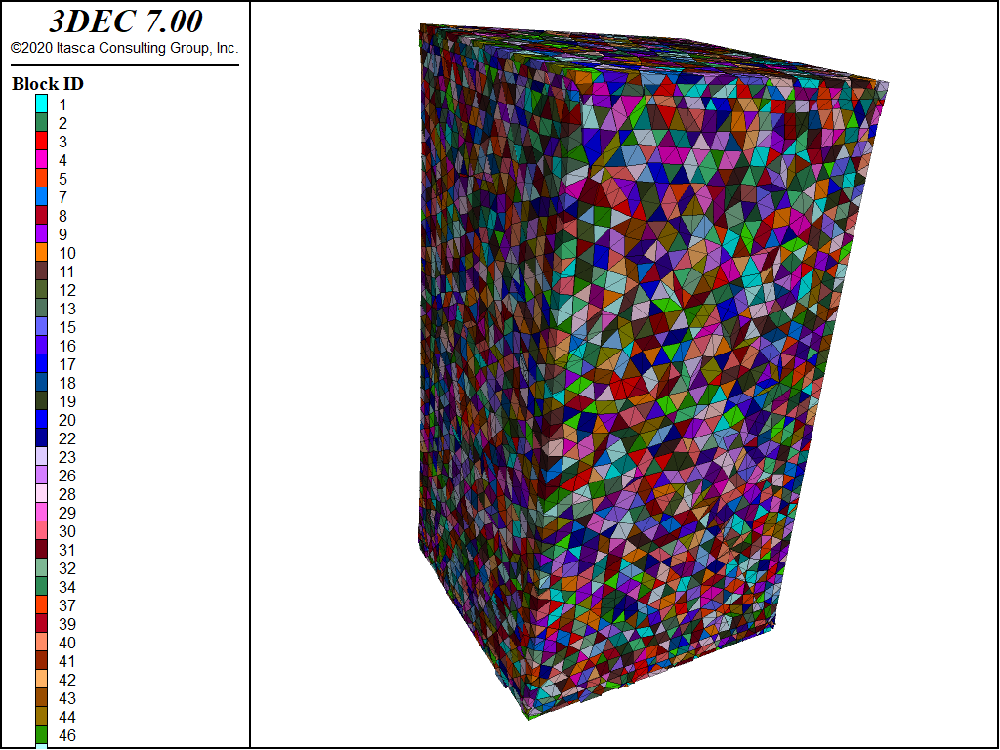

考虑破碎的单轴抗压强度试验
注意
要在 3DEC 中查看此项目，请使用菜单命令 。选择“3DEC/ ExampleApplications/ Fragment”，然后选择“Fragment.prj”进行加载。所用的主数据文件（main data files）显示在本示例的末尾。所有数据文件都可在该项目中找到。
问题描述
本示例介绍如何对方形截面试样进行简单的单轴抗压强度试验。模型模拟由离散裂隙网络切割的黏结块体集合体。计算并可视化压缩试验产生的碎块。
3DEC 模型
黏结块体模型通过创建一个 6x6x10 m 的块体，然后用棱边长度为 0.5 m 的四面体网格单元划分网格来构建。随后将网格单元导出为块体。用 model new 命令清除现有模型，并导入这些四面体块体。
从四个竖向棱边切去 0.5 m。这样做是因为四面体网格划分容易沿棱边面产生排列整齐的网格单元，并可能由于块体沿棱边的“结晶状”堆积而产生不真实的高强度。
随后创建一个具有幂律尺寸分布的离散裂隙网络（DFN），裂隙直径的最小值和最大值分别为 0.5 m 和 10 m。DFN 及所生成块体的轮廓如图 1（Figure 1）所示。


图 1：用于切割模型的 DFN。
然后用 DFN 切割模型。所得的块体如图 2（Figure 2）所示


图 2：构成模型的块体。
然后对模型划分网格并赋予节理属性。四面体块体之间的节理赋予较高的强度，而 DFN 裂隙内部的节理则赋予较低的强度，如表所示。
位于 DFN 裂隙内部、强度较低的节理如图 3（Figure 3）所示


图 3：模型中的 DFN 节理。
假定网格单元为弹性，杨氏模量为 1 GPa，泊松比为 0.25。
加载与监测
通过对块体顶部和底部的网格点施加 0.1 m/s 的恒定速度对块体加载。轴向应力由所有顶部和底部网格点的竖向（z）反力之和除以横截面积的两倍计算得到。轴向应变则简单地为顶部与底部网格点位移之和除以原始长度。
随后对模型进行 10,000 步的循环计算。由于模型永远不会达到平衡，因此不使用 求解模型（model solve） 命令。
结果与讨论
3DEC 模拟得到的应力-应变曲线如图 4（Figure 4）所示。试样表现出相当脆性的行为，正如预期，其峰值强度为 3.2 MPa。
所得碎块如图 5（Figure 5）所示。碎块定义为由完整黏结（未发生拉伸或剪切破坏的节理）连接在一起的块体集合。不同的碎块之间由黏结已破坏的节理分隔。碎块呈现出轴向劈裂型机制，这在脆性岩石的单轴抗压强度试验中很常见。


图 4：单轴抗压强度试验中轴向应力与轴向应变的关系。


图 5：单轴抗压强度试验结束时的碎块。
数据文件
fragment.dat
; 文件名：fragment.dat
;
; 说明如何使用破碎块体功能
; 研究黏结块体模型的破碎过程。
;
;==================================================================
model new
model random 10001
; 将模型做得比所需宽度更宽，以便切除边缘对齐的部分
block create brick -3 3 -3 3 -5 5
block zone generate edgelength 0.5
block zone list poly
;
;===================================================================
model new
model random 10001
model large-strain on
model title 'Fragmentation of a Bonded Block Model'
model domain extent -6 6 -6 6 -10 10
; 添加 DFN
fracture template create 'dfn1' size power-law 3 size-limit 0.5 10
fracture generate template 'dfn1' dfn 'realization_1' fracture-count 200
program call 'poly'
; 切除边缘
block cut j-set dip 90 d-d 90 or 2.5 0 0
block delete range pos-x 2.5 3
block cut j-set dip 90 d-d 90 or -2.5 0 0
block delete range pos-x -3 -2.5
block cut j-set dip 90 d-d 0 or 0 2.5 0
block delete range pos-y 2.5 3
block cut j-set dip 90 d-d 0 or 0 -2.5 0
block delete range pos-y -3 -2.5
; 按 DFN 切割
block cut dfn name 'realization_1' jointset-id 99
; 生成网格单元
block zone gen edgelength 0.25
; 指定接触参数
block contact jmodel assign mohr
block contact prop stiffness-normal 5e10 stiffness-shear 1e10 ...
friction 30 cohesion 1e6 tension 1e5
; DFN 外部应具有无限强度。
; 本算例无需此命令，因为裂隙会终止于
; 四面体块体边界
;block contact prop coh 1e12 ten 1e12 range joint-set 99
; 现在为裂隙设置真实强度
block contact prop coh 0 ten 0 range dfn-3dec 'realization_1'
block contact material-table default jmodel mohr
block contact material-table default property stiffness-normal 5e10 ...
stiffness-shear 1e10 fric 30
; 网格单元参数
block zone cmodel assign elastic
block zone prop dens 2000 young 1e9 poiss 0.25
; 设置应力和应变历程
block gridpoint group 'top' range pos-z 5
block gridpoint group 'bottom' range pos-z -5
[global area = 5.0*5.0]
[global length = 10.0]
fish def zzstress
; 压应力为正，单位为 MPa
local top_reaction = 0.0
local bottom_reaction = 0.0
loop foreach gp block.gp.list
if block.gp.group(gp) = 'top'
top_reaction = top_reaction - block.gp.force.reaction.z(gp)
local top_disp = block.gp.disp.z(gp)
endif
if block.gp.group(gp) = 'bottom'
bottom_reaction = bottom_reaction + block.gp.force.reaction.z(gp)
endif
end_loop
zzstress = 0.5e-6*(top_reaction + bottom_reaction)/area
zzstrain = -2.0*top_disp/length
end
fish history zzstress
fish history zzstrain
block fragment compute
block fragment fill-group slot 'fragments-pre'
block fragment dump filename 'fragments-pre.txt'
model save 'initial'
===============================================
; 边界条件
block gridpoint apply vel-z -0.1 range group 'top'
block gridpoint apply vel-z 0.1 range group 'bottom'
model cycle 10000
model save 'ucs'
; 现在计算破碎块体信息
block fragment compute
block fragment fill-group slot 'fragments'
block fragment dump filename 'fragments.txt'
program return
;================================================
; 文件结束：fragment.dat
| 这些内容对您有帮助吗？… | FLAC3D © 2019, Itasca | 原文更新于 2020 年 10 月 8 日 |